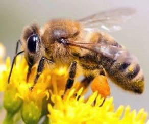
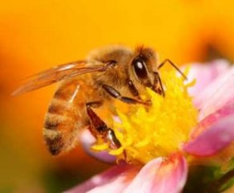
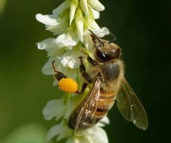
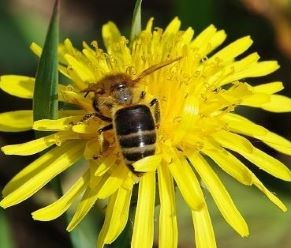
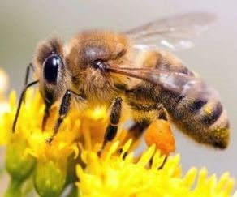
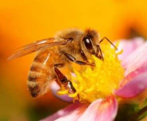
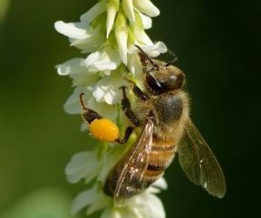
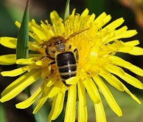

ПОЖЖУЖЖЖЖИМ?
Всім привіт! Мене звати Бен! Так-так і я бджола!
Я мрію стати супергероєм зібравши всі піктограми Бджолок. Я позитивно і з гумором дивлюся на життя. Я ботанік у школі мене більше значків, ніж у будь-якої іншої бджілки. Щороку, коли всі продають коробки з цукерками, я ставлю свій рекорд продажів. Я мрію стати супергероєм! У мене блакитні очі та темне волосся. Не дуже добре співаю, зате віртуозно вмію грати на барабанах.Ми робимо МЕД! Це надзвичайно корисна їжа! Ми її збираємо на квіточках дерев та у полі. У кожного меда є своя пора та сезон. Мед є що взагалі не застиває, це іноді так і манить його з'їсти! До речі, давайте познойомимось ближче, ось моя сторінка на
БДЖIЛКО-СТАЙЛ!
Бджола́ медоно́сна
(Apis mellifera)— вид медоносних бджіл, що належить до класу комах (Insecta), ряду перетинчастокрилих (Hymenoptera), родини справжніх бджолиних (Apidae)[2]. Свійська комаха, стратегічний запилювач квіткових рослин. Бджола медоносна й шовкопряд шовковичний — єдині комахи, яких вдалося одомашнити людині. Вагомий внесок у вивчення біології бджіл, деталі їх зв'язків з квітковими рослинами
Види та властивості меду i вплив вітамінів та продуктів:
- Мед
- Вітамінний
- Мінерали
- Ліки
- Гречаний мед
- Вітамінний
- Застосування у лікарнях
- Мед із рапсу
- Користь у застосуванні
- Гречаний мед
- Вітамінний
- Застосування у лікарнях
- Мед з різнотрав'я
Як ми - Бджоли збираємо мед!
 







А ось така смакота виходить!
Викачка меду: основні правила та поради
Перш за все необхідно переконатися в зрілості продукту і наявності достатньої його кількості в рамках. Визначити ступінь зрілості ласощів можна по запечатанності сот. Збирати мед можна тоді, коли приблизно чверть рамки запечатана. Якщо запечатування ще не відбулося - збирати мед рано, адже в ньому присутня велика кількість вологи, він рідкий і швидше за все закисне. Витягніть рамку і вивчіть її уважно. Якщо мед не тече - його можна відкачувати.
Качку меду на пасіці можна проводити кілька разів за сезон. І такий підхід буде найбільш вірним, адже багато медоносних рослин, наприклад, конюшина, малина, акація поставляють бджілкам велику кількість сировини і стільники переповнюються. Звільнивши місце ви допоможете бджолам продовжити поповнювати запаси без будь-яких складнощів. Тим більше, відразу за цими рослинами цвісти починають липа, гречка та інші медоноси. Природний взяток збільшується і місця знадобиться ще більше.
Коли в перший раз слід забирати мед у бджіл
Якщо погодні умови і клімат регіону дозволяють перша відкачка смачних ласощів проводиться ще навесні. Так, на півдні країни отримати урожай можна в травні, тоді як в північних районах доведеться чекати початку літа. Починайте перевіряти рамки на текучість меду вже з початком цвітіння акації.
Як правильно збирати мед
Відповідь на це питання кожен бджоляр знаходить для себе індивідуально, але технологія в усіх випадках залишається схожою. Є кілька важливих нюансів, знаючи про які можна істотно спростити процес відкачування і зробити його продуктивнішим. Проводити відкачування меду краще далеко від бджіл, які будуть тільки заважати. Можна використовувати спеціальні намети з віконцями, закритими сітками. Ще один варіант - заносити корпуси вуликів в спеціально відведене для цього приміщення або обладнане місце.
Збираємо мед!- ЧИТАЄМО ІНСТРУКЦІЮ:
- Як зібрати мед?
- Інструкція проста:
- встановіть видалячі бджіл
- витягніть рамки з вуликів;
- розпечатайте стільники з допомогою ножа;
- відкачайте мед;
- встановіть рамки у вулики;